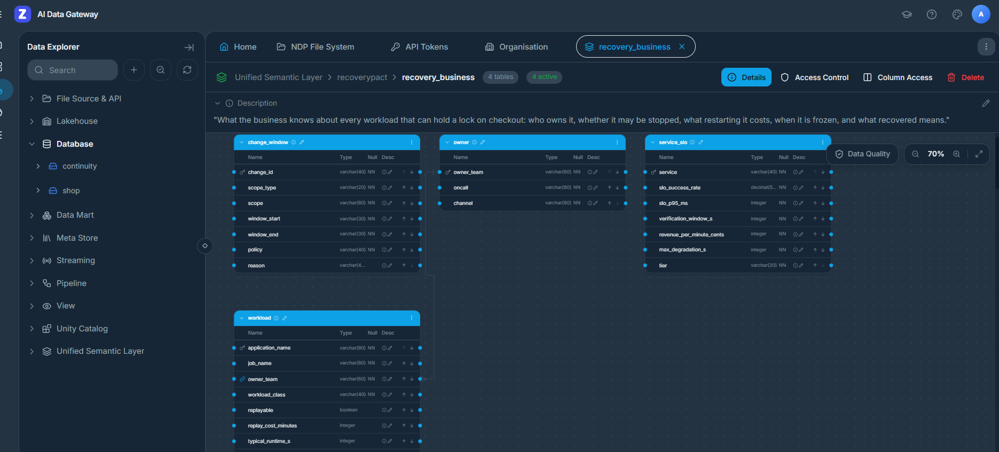
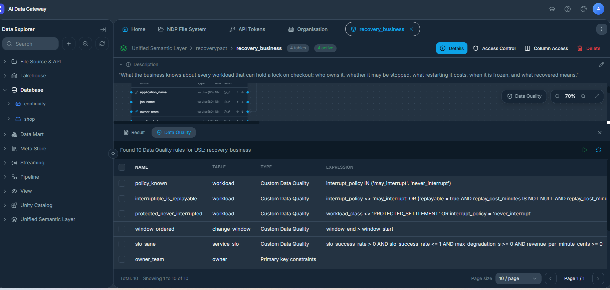

Zetaris · the business truth
The database says “kill it”.
Zetaris is how the pact finds out that “it” is a card settlement that must never be interrupted.
The facts that make a recovery safe never live in the database: who owns the job, whether it can be replayed, whether finance froze it for quarter-end, how much revenue is at risk right now. Zetaris federates them into one SQL answer per question, live, every time a guardian asks.
Safe without Zetaris. Useful only with it.
All 8 incidents × 3 repeats on Nemotron 3 Ultra, the same as the headline benchmark, with Zetaris unreachable and the local fallback disabled. Validator: 847/847 checks.
Blind to the business, the pact doesn't guess: it escalates every incident to a human. Zetaris is the difference between a safe system and a useful one.
A missing calendar is not a clear calendar
Incidents A and G × 3 with only the change-calendar source unreachable. In G, finance has frozen the quarter-end close. The registry alone says the job may be interrupted, and only the calendar says the owner must decide.
Quarter-end freeze (G)
Validator: 216/216 checks.
Routine batch (A)
The rule: an unavailable source is recorded as UNKNOWN, never as empty.
A data owner's edit governs the very next decision
Between runs we rewrote one row in the source PostgreSQL registry: the batch job's interrupt_policy. No cache, no redeploy. Zetaris read it back live every time.
| Step (× 2 repeats) | Row written in the source | Zetaris returned | Decision |
|---|---|---|---|
| Baseline | may_interrupt | may_interrupt | Stopped the batch · verified recovery |
| Flipped | never_interrupt | never_interrupt | Escalated · nothing touched |
| Restored | may_interrupt | may_interrupt | Stopped the batch · verified recovery |
A record that contradicts itself can't vouch for a kill
We modelled the business in Zetaris's Unified Semantic Layer as recovery_business: four tables (workload, owner, change_window, service_slo) with descriptions, keys and five data-quality rules. Every guardian question now reads the semantic layer, and every registry answer carries Zetaris's own verdict for each row. A row that fails a rule can't justify stopping a job (invariant I9).
| Data-quality rule (on the semantic layer) | What it protects |
|---|---|
| interruptible_is_replayable | A job may be marked interruptible only if it is replayable at a known cost |
| protected_never_interrupted | A protected settlement is always never_interrupt |
| policy_known | The owner's ruling is one the pact understands |
| owner_team (foreign key) | Every workload has an owner to escalate to |
| window_ordered · slo_sane | Change windows and SLO targets are well-formed |

recovery_business, 4 tables, active, with the business description the guardians read.
Incident A through the semantic layer
Running the rules on every registry question costs about 1.5 s.
Attack: a forged registry record
The forgery fooled the Database AI every time. Twice the Business AI was ready to accept and the code refused; once it read Zetaris's verdict and refused itself. Watch it.
Three questions, one federated SQL each
SQL Zetaris ran
SELECT w.application_name, w.job_name, w.owner_team, w.workload_class, w.replayable, w.replay_cost_minutes, w.typical_runtime_s, w.interrupt_policy, w.business_purpose, e.oncall, e.channel
FROM continuity.workload_registry w
LEFT JOIN continuity.escalation_contacts e ON e.owner_team = w.owner_team
WHERE w.application_name IN ('protected_settlement')SQL Zetaris ran
SELECT c.change_id, c.scope, c.policy, c.reason, c.window_start, c.window_end, w.application_name, w.owner_team
FROM RP_CHANGE_MGMT.change_calendar c
JOIN continuity.workload_registry w ON c.scope_type = 'job' AND c.scope = w.job_name
WHERE w.application_name IN ('protected_settlement')
AND current_timestamp() BETWEEN to_timestamp(c.window_start, "yyyy-MM-dd'T'HH:mm:ssX")
AND to_timestamp(c.window_end, "yyyy-MM-dd'T'HH:mm:ssX")SQL Zetaris ran
SELECT s.service, s.slo_success_rate, s.slo_p95_ms, s.verification_window_s, s.revenue_per_minute_cents, s.max_degradation_s, s.tier, t.total, t.failed
FROM continuity.service_slo s
CROSS JOIN (SELECT COUNT(*) AS total, SUM(CASE WHEN outcome <> 'SUCCESS' THEN 1 ELSE 0 END) AS failed
FROM shop.checkout_events WHERE created_at > current_timestamp() - INTERVAL 10 SECONDS) t
WHERE s.service = 'checkout'Those three answers are why the pact waited in incident B while both single-agent baselines got it wrong. Every federated answer is stored as evidence with its exact SQL and latency, and every guardian claim must cite it. In the headline benchmark, 145/145 business facts came from live Zetaris.